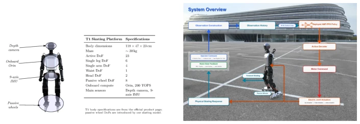
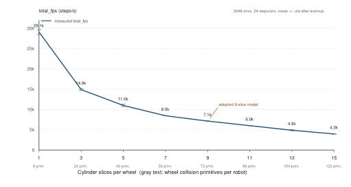
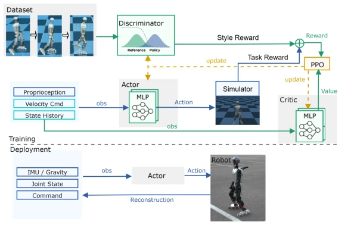
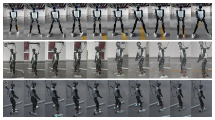
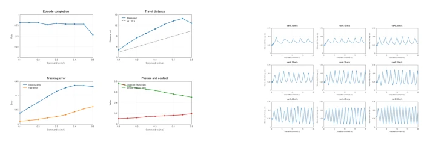
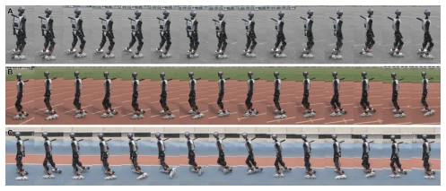
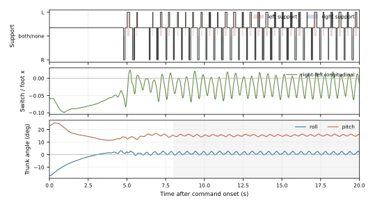
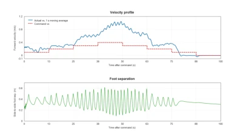

This paper attempts to enable humanoid robots to wear roller skates and 'skate'. The challenge lies in the dynamics of passive wheels being too 'slippery', involving rolling contact and underactuated control. The authors utilized the AMP-PPO framework to accomplish two skating methods, Pump Glide and Push Glide; the simulation-to-real transfer is also notable, demonstrating the potential of reinforcement learning in complex contact tasks. However, the wheel collision model employed an approximation such as 'sliced cylinder'; while stable, accuracy is compromised, and real-robot speed tracking exhibits significant gain bias (command 0.1 actual 0.36), indicating the sim-to-real gap remains unbridged. Furthermore, evaluation lacks standardized benchmarks, relying more on task-level verification. Overall, this counts as an interesting attempt within wheeled-legged robots, but it still falls short of being 'smooth', with the compromise in wheel modeling being too pronounced; future work requires more precise contact models.
Human roller skating lies between walking and wheeled locomotion, yet passive wheel systems introduce underactuated dynamics and anisotropic friction, making traditional model-based methods (e.g., ZMP) difficult to handle continuous rolling support points [7, 8]. Pure reinforcement learning often necessitates extensive reward engineering and yields unnatural actions [4, 10]. Existing wheeled-legged robot research predominantly focuses on active wheels or single sliding actions [12, 21], lacking constraints on motion style (Style) under passive wheel rolling contact. This paper aims to address the passive wheel simulation fidelity issue and leverage AMP to learn skating action styles from human demonstrations, reducing manually designed phase rules, achieving simulation-to-real roller skating transfer, and filling the research gap in passive wheeled humanoid control.

Fig. 1. T1 humanoid skating platform, passive wheel modification, and system overview.
The overall process is based on the AMP-PPO framework. First, human MoCap data is redirected to robot reference motion via GMR, cleaned, and a reference dataset is constructed [6]. The innovation in the simulation layer lies in the wheel collision model: comparing STL, spheres, etc., the 9-sliced cylinder (Sliced-cylinder) was ultimately selected to achieve a balance between geometric fidelity, rolling stability, and training throughput, as shown in Fig. 3 [2]. Training is divided into two independent pipelines, Pump Glide and Push Glide, each possessing independent policies, discriminators, and reward architectures, as shown in Fig. 4 [3]. Task rewards constrain speed tracking, posture safety, and contact safety; AMP rewards constrain action style via a Wasserstein discriminator, enabling the policy to imitate human skating action features rather than rigidly tracking trajectories. The policy outputs non-wheel joint target positions, executed by a bottom-level PD controller, with wheels remaining passive, ensuring the learning focus is on balance and contact management.

Fig. 3. Training throughput under different numbers of cylindrical slices

Fig. 4. AMP-based training framework for humanoid roller-skating gaits
实验Experiments
实验在 Isaac Lab 仿真和 T1 真机上进行。数据集来自人类 MoCap 重定向。评测指标包括完成度、速度误差、躯干倾斜和步态节奏。Pump Glide 在真机实现了稳定的长周期开合滑行，速度跟踪在 0.1-0.45 m/s 区间完成率高，如图 5、6 所示 [4, 5]。Push Glide 实现了交替支撑，但速度跟踪存在增益偏差（命令 0.1 m/s 实际约 0.37 m/s），归因于轮子模型差异，如图 8、10 所示 [7, 8]。消融实验分析了不同奖励项（如单腿支撑时间奖励）对步态的影响。结果显示 AMP 有效约束了风格，但轮子接触建模的近似仍是误差来源，需进一步系统辨识。
Experiments were conducted in Isaac Lab simulation and on the T1 real robot. The dataset originates from human MoCap redirection. Evaluation metrics include completion, speed error, torso tilt, and gait rhythm. Pump Glide achieved stable long-period open-close skating on the real robot, with high completion rates for speed tracking in the 0.1-0.45 m/s range, as shown in Fig. 5, 6 [4, 5]. Push Glide achieved alternating support, but speed tracking exhibited gain bias (command 0.1 m/s actual approx 0.37 m/s), attributed to wheel model differences, as shown in Fig. 8, 10 [7, 8]. Ablation experiments analyzed the impact of different reward terms (e.g., single-leg support time reward) on gait. Results indicate AMP effectively constrained style, but the approximation of wheel contact modeling remains a source of error, necessitating further system identification.

Fig. 5. Real-robot Pump Glide trials: low-friction front view (A), low-friction side view (B), and medium-friction side view (C)

Fig. 6. Pump Glide results under different forward velocity commands. Left: velocity, completion, and posture metrics; right: lateral foot separation

Fig. 8. Real-robot Push Glide trials

Fig. 10. Push Glide support phase and torso attitude
其他图片Other Figures

Fig. 7. Velocity response and lateral foot separation under a 100 s profile